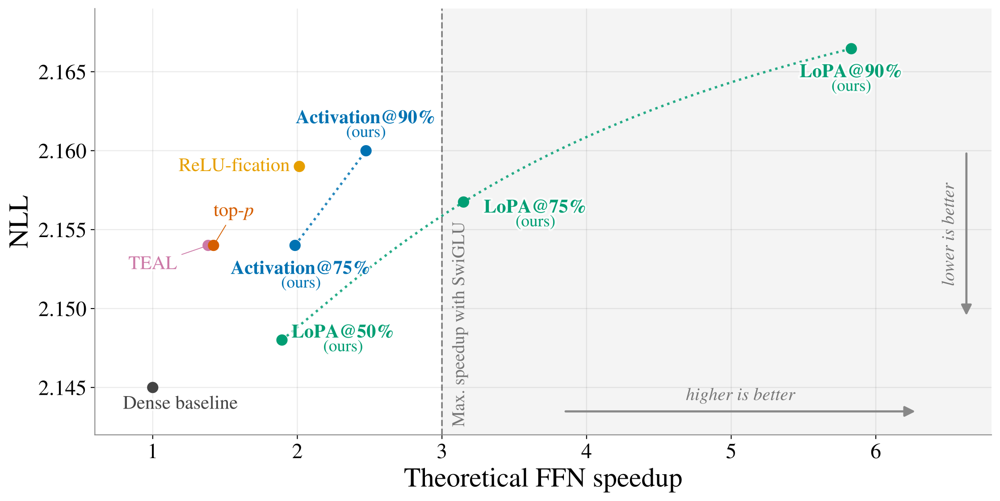
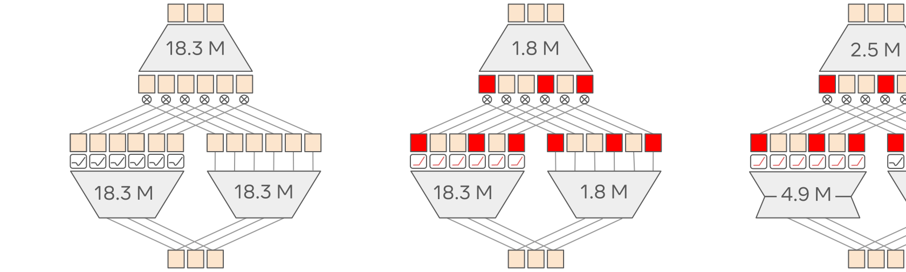
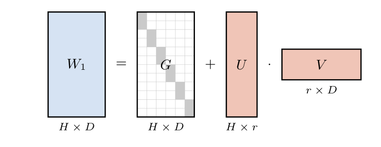
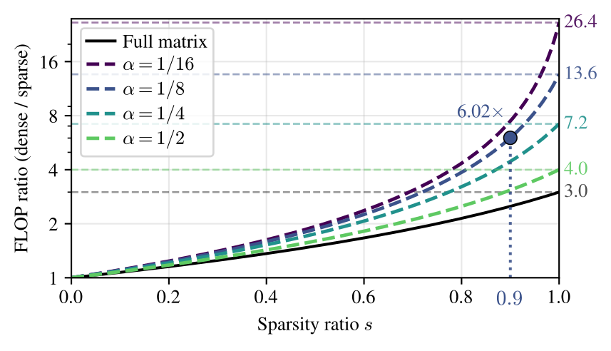
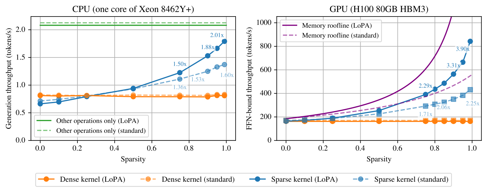

长期以来，FFN的非结构化激活稀疏被认为无法兑现成真实加速：事后剪枝只能利用模型恰好有的稀疏度，8B模型在1%质量损失下临界稀疏度不到40%。Meta FAIR这篇论文换了一条路，不靠事后剪枝，而是在训练中途重铸模型，让稀疏度成为训练时就能设定的目标。
更进一步，LoPA门控重新分配了三个FFN矩阵之间的算力预算，把那个必须算满的门矩阵做便宜，一举捅破标准门控3倍的加速天花板。下面把方法和实验逐一拆开。
Transformer里有两种记忆机制。一种是短时记忆，由当前序列决定，体现为注意力机制产生的一串键和值；另一种是训练时固化在参数里的长期记忆，主要装在参数量最大的前馈网络层里。FFN的推理成本与序列长度无关，但在绝大多数场景下主导了总复杂度，除非输入上下文极长。
门控FFN的计算式为y = W2 × (A(W1 × x) ⊙ (W3 × x))，三个矩阵各花HD次乘加，稠密FFN一共3HD。用RELU这类稀疏激活时，训练好的Transformer会自然产生稀疏中间激活；但如今主流的SILU门控设计换来了性能，代价是没有任何精确零可供利用，而从头用RELU预训练又会造成永久死亡神经元。
事后稀疏化方法只能利用预训练模型恰好承认的稀疏度，上限很低。模型重铸的做法是：在训练中途换掉部分架构并继续训练，让模型适应这个变化。稀疏度不再是换激活碰运气，而是训练时设定的目标，直接做到90%。

1 激活重铸：模型用标准门控的全矩阵W1预训练，重铸时把非稀疏激活换成新的R-S+激活，再做中途训练放大稀疏。
2 LoPA重铸：模型从头用LoPA门控参数化预训练，然后做激活重铸。参数量与标准模型相同，推理更快，但要求从头训练。
3 架构重铸：从现成预训练模型出发，重铸时把完整W1矩阵换成LoPA门控，同时做激活重铸。FFN参数量会减少，性能退化稍大。
训练用Chinchilla单位T(约20倍参数量的token数)计量。预训练做4T，重铸从学习率稳定的检查点开始，先重置优化器状态，再走三阶段WSD学习率：warm-up阶段学习率从0线性升到γ，约T/20个token，稳定期保持γ直到T/2T/4T/7T个token，最后1T个token余弦衰减。默认配置是4T预训练、4T中途训练、1T衰减。
R-S+是RELU与SILU的混合体：x≥0时等于SILU(x·σ(x))，x<0时输出0。因为正半轴与SILU完全一致，重铸只扰动激活的负半轴；相比之下，RELU-fication要求模型在整个数据范围上重新适应，对性能冲击更大。
零值只有在喂给它的矩阵乘法之前已知才可利用：门A(W1x)中的零在算完W1x之后、W3之前已知，可以跳过W3的一行和W2的一列，但W1永远要算满。记FLOP-ratio为3HD除以三矩阵实际执行的乘加数，标准门控下它等于3/(3-2s)，s为稀疏比例，上限为3。
| x<0 | x≥0 | |
|---|---|---|
| RELU | 0 | x |
| SILU | x·σ(x) | x·σ(x) |
| R-S+ | 0 | x·σ(x) |
光换激活还不够，论文在标准交叉熵损失上加了一项l1稀疏损失：(λ/H)Σ|h|1，h为各层FFN门后激活，|·|1为l1范数。λ越大激活越稀疏，但交叉熵上升，生成质量下降，两者需要权衡。
λ与稀疏度s的关系随模型规模变化，于是采用自适应规则：给定目标稀疏度s*，按λ_{i+1} = λ_i · α^{sign(s*−s_i)}更新(λ0=1e-3，α=1.03)。稀疏不够就加大λ，超了就减小，稀疏度成了训练时设定的目标。
标准门控的理论上限是3，因为算W1x找零位置这一步省不掉。LoPA门控的思路是重新分配三个矩阵之间的算力：把必须算满的门矩阵做便宜，省下的参数补给W2和W3。每层FLOP的对比很直观：D=2560、H=7168、秩r=400、90%稀疏R-S+门下，稠密SwiGLU三层各18.3M，稀疏SwiGLU把W3和W2压到1.8M，稀疏LoPA门控进一步把门压到4.9M、W3和W2压到2.5M，隐维度从H增至H'=9787以保持参数量不变。

具体做法是把W1拆成G+UV：G是每行单个1、其余为0的不可训练稀疏矩阵，U(H×r)和V(r×D)是低秩可训练矩阵。G保证W1满秩，效果远好于纯低秩的W1=UV，FLOP和参数量却相同。为保持FFN总参数量不变，隐维度从H调到H'，使r(H'+D)+2H'D等于标准参数量3HD。

忽略G的微小开销，门W1=UV只花r(D+H')，W3和W2各花(1−s)DH'，FLOP-ratio变为(r(D+H')+2DH')/(r(D+H')+2(1−s)DH')。取α=r/D=1/8时，s→1的极限是13.5，而标准门控只有3；α=1/8、90%稀疏下FFN的FLOP降低6.02倍。

工程细节：W1变成两层乘积加深了网络，大规模训练会不稳定，于是在U和V之间加RMSNorm：W1(x)=Gx+U·RMSNorm(Vx)。双激活则给W3的输出也加一个激活函数，弥补门前容量下降，效果反而比标准门控略好。默认取α=1/8。
W1变成两层乘积加深了网络，大规模训练会不稳定，于是在U和V之间加RMSNorm：W1(x)=Gx+U·RMSNorm(Vx)。双激活则给W3的输出也加一个激活函数，弥补门前容量下降，效果反而比标准门控略好。默认取α=1/8。
架构重铸要把现成模型的W1近似成G+UV：交替最小化||W−M−UV||F²，固定U、V时每行取W−UV中幅度最大元的位置和符号定M，固定M时对W−M做截断SVD。M的集合离散，保证有限步收敛，实践中几步即定。为贴近原检查点，这里不加RMSNorm，也不给W3加激活。
0.81B模型上，激活重铸加l1做到89%稀疏，NLL只涨0.68%，加速2.48倍；LoPA重铸加l1做到89%稀疏，NLL涨0.93%，加速5.83倍；架构重铸加l1做到90%稀疏，NLL涨2.20%，加速7.94倍，代价是参数少21%。RELU-fication只能到76%稀疏、2.00倍加速。
恢复重铸前NLL需要的追赶时长：不用l1时最多1.25T，LoPA重铸0.5到1.0T，用l1推到90%稀疏需要1.5到2.75T，跨模型规模大致恒定。12个短上下文下游任务上，激活重铸平均只掉0.4分。
MoE也适用：8专家top-2模型的专家FFN做激活重铸，轻l1惩罚下达到59.0%稀疏、NLL加0.033，目标90%时达到88.6%、加0.083。对比之下切到top-1路由NLL更差，即2.073对2.064，MoE与激活重铸可以叠加。
现成检查点验证用Qwen3-1.7B-Base：激活重铸5T预算加衰减后89.5%稀疏、NLL 1.875、加速2.48倍；架构重铸89.6%稀疏、NLL 1.937、加速8.01倍，同时少了294M参数。
| 配置(预训练→中途训练) | NLL | ΔNLL | 稀疏度 | 加速比 |
|---|---|---|---|---|
| 基线：中途训练与RELU-fication | ||||
| Base[SILU]→Base[SILU](稠密基线) | 2.145 | – | – | 1.00× |
| Base[SILU]→Base[RELU](RELU-fication) | 2.159 | +0.65% | 76% | 2.00× |
| (a)激活重铸 | ||||
| Base[SILU]→Base[R-S+] | 2.153 | +0.36% | 69% | 1.84× |
| Base[SILU]→Base[R-S+, l1@90%] | 2.160 | +0.68% | 89% | 2.48× |
| (b)LoPA重铸 | ||||
| LoPA[SILU]→LoPA[SILU] | 2.150 | +0.24% | – | 1.00× |
| LoPA[SILU]→LoPA[R-S+] | 2.148 | +0.13% | 51% | 1.89× |
| LoPA[SILU]→LoPA[RELU] | 2.149 | +0.19% | 57% | 2.11× |
| LoPA[SILU]→LoPA[R-S+, l1@90%] | 2.165 | +0.93% | 89% | 5.83× |
| (c)架构重铸(参数-21%) | ||||
| Base[SILU]→LoPA[SILU] | 2.180 | +1.63% | – | 1.39× |
| Base[SILU]→LoPA[R-S+] | 2.186 | +1.90% | 73% | 4.21× |
| Base[SILU]→LoPA[RELU] | 2.194 | +2.27% | 78% | 4.87× |
| Base[SILU]→LoPA[R-S+, l1@90%] | 2.193 | +2.20% | 90% | 7.94× |
同等NLL下比理论FLOP加速：标准门控下，模型重铸@75%稀疏为2.0倍，top-p和TEAL都只有1.4倍；LoPA门控下，重铸@75%稀疏为3.2倍，top-p和TEAL都只有1.3倍。训练出来的稀疏全面压过事后剪枝，而且优势随训练时长拉大。
对RELU-fication：重铸在各类设置下都达到约90%稀疏，因为稀疏度是设定的目标，RELU-fication没有这种控制手段。激活重铸的NLL差距不到0.01 nat，LoPA重铸@90%的NLL代价也只有0.01到0.04，模型却便宜得多。
| FFN架构 | 参考NLL | 模型重铸@75% | top-p | TEAL |
|---|---|---|---|---|
| 标准门控 | 2.154 | 2.0× | 1.4× | 1.4× |
| LoPA门控 | 2.153 | 3.2× | 1.3× | 1.3× |
稀疏主要在单token自回归解码时有用；batch下各样本稀疏模式不对齐，只能按掩码并集加载行列，稀疏度被稀释。CPU用稀疏感知的AVX-512核，GPU用融合W2/W3并跳过非活跃神经元的Triton核族，按稀疏度选分块与排布。

5.79B模型float32实测：90%稀疏下，CPU端到端加速标准门控1.53倍、LoPA门控1.88倍；GPU上FFN加速标准门控2.06倍、LoPA门控3.31倍，捅破3倍天花板；95%稀疏下LoPA门控在GPU达到3.90倍。稀疏核叠int8量化后，90%稀疏下达到8.13倍加速。
参考：https://arxiv.org/html/2609.31975v1